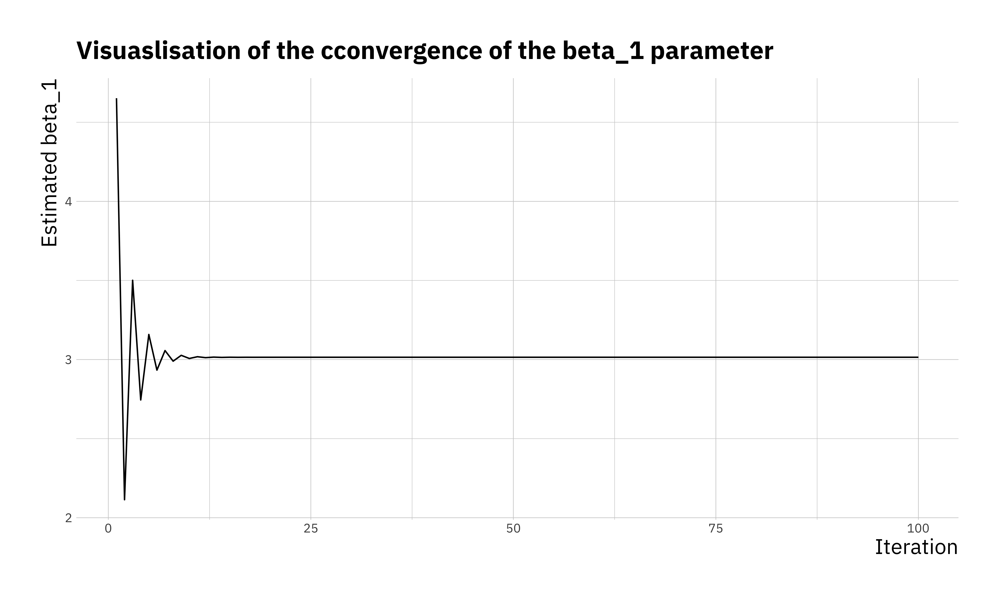
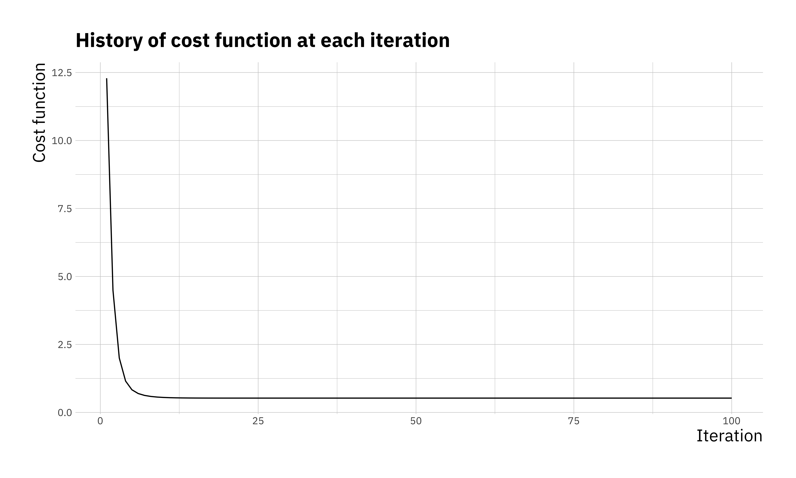
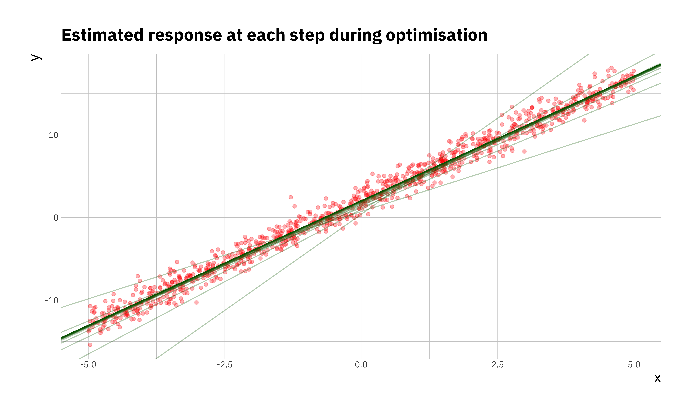

4.4 Gradient descent algorithm (+)
Finally, in todays practical we will implement the gradient descent algorithm which we discussed in the lecture.
For simplicity we will only consider the case with one covariate. In this section we will use simulated data and compare the results with lm(). The model we will simulate from is:
\[y = 2 + 3 x + \epsilon\]
# setting seed to be able to reproduce the simulation
set.seed(200)
# number of samples
n_sample <- 1000
# We sample x values from a uniform distribution in the range [-5, 5]
x <- runif(n_sample, -5, 5)
# Next we compute y
y <- 3 * x + 2 + rnorm(n = n_sample, mean = 0, sd = 1)
sim_df <- data.frame(x = x, y = y)
ggplot(sim_df, aes(x = x, y = y)) +
geom_point()
Recall that in gradient descent we want to minimise the Mean Squared Error (\(J(\beta)\)) which is the cost function. The first step is to write this cost function in R. For simplicity we will use matrix multiplication, which in R is implemented as %*%. (Note, to get help on these function with special characters you can’t simply run the command ?%*% instead you have to put it in quotes ?"%*%".)
To perform an optimisation we will have to initialise parameters, in general optimisation algorithms won’t always produce the same results for all choices of initialisations.
# First we set alpha and the number of iterations we will perform
alpha <- 0.2
num_iters <- 100
# next we will initialise regression coefficients
coef <- matrix(c(0,0), nrow=2)
X <- cbind(1, matrix(x))
res <- vector("list", num_iters)We now write a for loop to compute the optimisation, where we store the full history of the opmtimisation.
for (i in 1:num_iters) {
error <- (X %*% coef - y)
delta <- t(X) %*% error / length(y)
coef <- coef - alpha * delta
res_df <- data.frame(itr = i , cost = cost_fn(X, y, coef),
b0 = coef[1], b1 = coef[2])
res[[i]] <- res_df
}We created a list to store results res it is possible to combine all results into a simple data.frame using the bind_rows() function from the dplyr package. If we look at the final values in the resulting variable we will
## itr cost b0 b1
## 95 95 0.5275707 2.034285 3.014512
## 96 96 0.5275707 2.034285 3.014512
## 97 97 0.5275707 2.034285 3.014512
## 98 98 0.5275707 2.034285 3.014512
## 99 99 0.5275707 2.034285 3.014512
## 100 100 0.5275707 2.034285 3.014512We can see that \(\beta_0 = 2\) and \(\beta_1 = 3\) are reproduced faithfully. There are a few ways to visualise the optimisation. We can look at the convergence of the parameters, the cost function itself or even the estimated \(y\) at each step of the optimisation.
ggplot(res_df, aes(x = itr, y = b1)) +
geom_line() +
labs(x = "Iteration",
y = "Estimated beta_1",
title = "Visuaslisation of the cconvergence of the beta_1 parameter")
ggplot(res_df, aes(x = itr, y = cost)) +
geom_line() +
labs(x = "Iteration",
y = "Cost function",
title = "History of cost function at each iteration")
ggplot(sim_df, aes(x = x, y = y)) +
geom_point(color = "red", alpha = 0.3) +
geom_abline(data = res_df, aes(intercept = b0, slope = b1),
alpha = 0.3, col = "darkgreen", size = 0.5) +
labs(x = "x", y = "y",
title = "Estimated response at each step during optimisation")
Now compare these results to the ones obtained by fitting a linear model in R using the function lm(), how different are the results. Try to reproduce these plots with \(\alpha =\) (0.02, 0.1, 0.5), and different number of iterations in the optimisation and compare the estimated \(\hat{\beta}_0\), and \(\hat{\beta}_1\) to the values you use during the simulation step. This will give you an idea how important the right choice of these two parameters is.